17 novembre, 2014 | di Antonio Rotundo
Due “Italie”. Non è la sintesi della fotografia del nostro Paese del consueto rapporto sociologico-economico-politico, ma la raffigurazione paradossale e contraddittoria dell’Italia, relativamente alla disponibilità del patrimonio informativo dei dati e i servizi geografici, in base alla prospettiva da cui la si analizza, nazionale o europea.
Nelle scorse settimane AgID ha pubblicato il report che presenta lo stato delle attività di alimentazione del RNDT (il catalogo nazionale dei metadati di dati e servizi territoriali) da parte delle Pubbliche Amministrazioni italiane. Negli stessi giorni, l’Agenzia Europa dell’Ambiente ha reso noto il rapporto sullo stato di attuazione della direttiva INSPIRE a metà del processo di implementazione, in cui, tra l’altro, è rappresentata la situazione sulla disponibilità dei metadati anche attraverso i servizi di ricerca.
L’Italia del RNDT è quella che rende conoscibili le informazioni (gli ormai arcinoti metadati) su un discreto numero (7814 per la precisione) di dati e servizi, indicandone le caratteristiche e le modalità per l’accesso e l’utilizzo.
L’Italia che esce fuori dal secondo rapporto è il Paese che, insieme ad altri 5 (Bulgaria, Cipro, Malta, Lituania ed Ungheria), su 28 Stati Membri, non rende disponibile quelle informazioni attraverso il geoportale comunitario, nonostante l’obbligo derivante dalla Direttiva INSPIRE (come si vede dalla mappa creata da Andrea Borruso sulla base delle informazioni del rapporto stesso).

È, quindi, un’Italia che non esiste. Un patrimonio di dati e servizi inesistente, nonostante gli sforzi economici, tecnici e tecnologici di tante Amministrazioni. O meglio, un patrimonio esistente ma che non è dato di conoscere, come se si fosse tornati indietro di un po’ di anni quando i dati erano tenuti in qualche “cassetto” inaccessibile.
Il paradosso che se ne produce è che se Giancarlo, giusto per usare un nome noto al blog che ci ospita, qui utilizzato per identificare un utente generico (cittadino, professionista, tecnico, decisore politico che sia), utilizzasse il catalogo nazionale o i tanti cataloghi dei singoli Enti italiani allora riuscirebbe a trovare le informazioni che cerca risparmiando tanto tempo prezioso che potrà impiegare nella valutazione, nell’utilizzo e nell’elaborazione dei dati.
Se invece il punto di accesso fosse il geoportale INSPIRE, allora la sua ricerca si rivelerebbe vana e se, per assurdo, il geoportale fosse l’unico punto di accesso, allora si ritroverebbe catapultato diversi anni indietro quando l’unica possibilità di conoscere la disponibilità di dati e servizi era quella di andare fisicamente a chiedere agli uffici dei vari Enti territoriali.
Tutto ciò nonostante sia stata addirittura introdotta recentemente (DL 91/2014 convertito nella legge 116/2014) una modifica al D. Lgs. di recepimento della Direttiva INSPIRE (32/2010) per cambiare … un “articolo”: così l’art. 7 comma 4 che recitava “Il servizio di ricerca [...] è garantito sulla base del RNDT [...]” è diventato “Un servizio di ricerca […] è garantito sulla base del RNDT [...]”. Ad oggi, però, per l’Europa i servizi di ricerca italiani (il RNDT non sarebbe più “il” servizio di ricerca ma “un” servizio di ricerca) sono rimasti ancora indeterminati, almeno a quanto risulta dal rapporto EEA.
Eppure, se i dati e i servizi documentati nel RNDT fossero “visibili” al geoportale europeo, l’Italia si posizionerebbe, per numerosità delle risorse informative, tra i primi 5 Stati Membri. Un bel balzo: dall’inesistenza all’alta classifica!
In più, come si evince dal report RNDT, le tipologie di dati documentati coprono quasi tutte le categorie tematiche (dall’utilizzo del territorio alle ortoimmagini, dalle reti di trasporto all’idrografia, dai nomi geografici alla pianificazione) offrendo a Giancarlo una gamma di risorse informative da poter utilizzare (a seconda della policy sul dato della Amministrazione titolare) per gli impieghi più disparati. Solo per dare un’idea si riportano alcuni grafici tratti dal report relativi al numero di dati descritti, in riferimento ai temi INSPIRE.
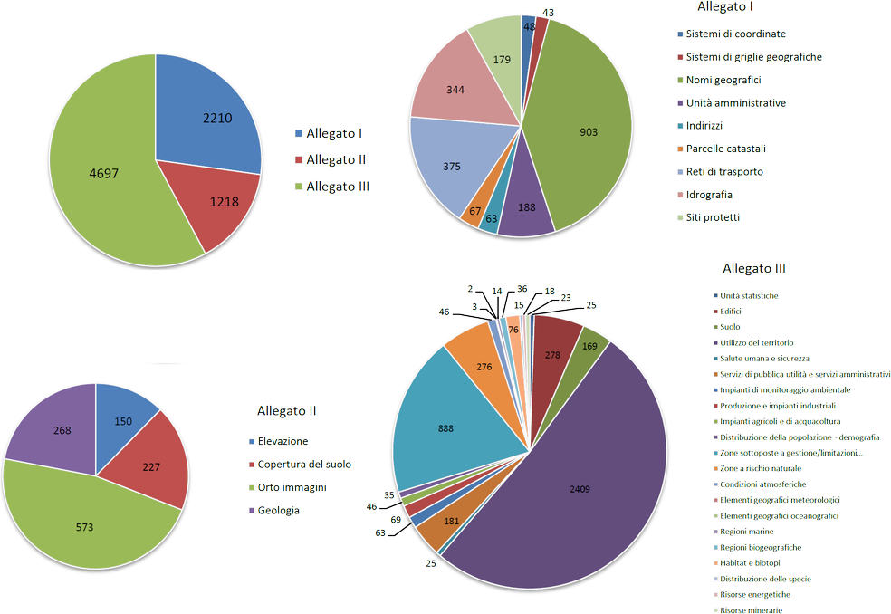
Al fondo, c’è il mancato adempimento della registrazione del (o di un) servizio di ricerca nazionale al geoportale INSPIRE da parte dell’Italia. Un adempimento che richiede l’invio di una mail con l’indicazione dell’endpoint del servizio da inserire in uno specifico registro. L’inserimento in tale registro farebbe sì che le risorse presenti nel catalogo nazionale siano rese disponibili nell’area di discovery del geoportale europeo. In questo modo il nostro Giancarlo vedrebbe soddisfatto il bisogno di conoscere la disponibilità di dati e servizi a prescindere dal punto di accesso, anche, stavolta, nell’eventualità di dover elaborare set di dati transnazionali, per esempio.
La storia è nota ai più. Se a qualche lettore del blog fosse sfuggita può leggere l’appello alla base della campagna “Vogliamo l’Italia nel registro INSPIRE” (#italy4INSPIRE) che questo stesso blog, insieme a tanti altri blog di informazione geografica e alla comunità geomatica italiana, hanno lanciato ad inizio anno.
Alla campagna è seguita anche un’interrogazione parlamentare presentata nel mese di luglio scorso e rimasta ancora senza risposta.E’ di qualche giorno fa (12 novembre), inoltre, la presentazione di una nuova interrogazione parlamentare che, ricalcando la prima e tenendo conto delle risultanze del rapporto EEA, sollecita la registrazione di un servizio di ricerca italiano al geoportale INSPIRE.
L’auspicio è che si pervenga quanto prima ad avere una sola Italia, un Paese, cioè, che sappia rappresentare anche a livello europeo il reale stato dell’arte circa la disponibilità dei dati e servizi territoriali.
Non solo per sanare un’evidente violazione del diritto comunitario; quanto anche per dare evidenza al costante e ingente impegno delle amministrazioni pubbliche italiane a rendere sempre più conoscibile, disponibile e interoperabile il proprio patrimonio informativo. E soprattutto per offrire anche agli utenti italiani la possibilità di poter fruire dei servizi resi disponibili nel contesto INSPIRE.
Per farci sentire un po’ più europei anche in questo!
Posted in Entropia | 1 Comment »
11 luglio, 2014 | di redazione

Ben 4 mesi fa chiedevamo una cosa dovuta e utile: che anche l’Italia fosse presente nel registro INSPIRE.
Non è cambiato nulla e questo incomprensibile stallo non è stato ancora superato. Ma c’è una novità e vi chiediamo di darci una mano a sostenerla e diffonderla.
La notizia di questa carenza di attuazione della normativa è arrivata a un gruppo di parlamentari (trasversale allo schieramento politico) interessato/competente sulle tematiche dell’innovazione tecnologica. L’onorevole De Lorenzis l’ha fatta sua e ha redatto questa interrogazione parlamentare, in cui chiede al Ministro dell’ambiente e della tutela del territorio e del mare “quali iniziative intenda assumere al fine di ottemperare all’obbligo di implementazione e integrazione nel portale europeo dei servizi descritti in premessa come richiesto dalla direttiva Inspire e dal relativo decreto di recepimento della stessa”.
La recente campagna affinché l’Agenzia delle Entrate facesse quanto dovuto nei confronti della comunità OpenStreetMap, ha tra i tanti pregi quella di farci sentire più forti.
Noi scriveremo nei social network:
@minambienteIT @glgalletti vogliamo l’Italia nel registro INSPIRE e vogliamo una risposta http://bit.ly/italy4inspire #italy4INSPIRE
Fatelo con noi!
Posted in Entropia | No Comments »
10 febbraio, 2014 | di redazione
NdR: la redazione di TANTO aderisce a questa campagna e si augura che questo incomprensibile stallo venga superato di slancio.
Premessa
INSPIRE prevede che ogni Stato Membro fornisca almeno un endpoint nazionale per il discovery di metadati.
Ad oggi, la maggior parte degli Stati Membri (23 su 28) ha soddisfatto questo requisito registrando il proprio riferimento nazionale nel geoportale INSPIRE: http://inspire-geoportal.ec.europa.eu/INSPIRERegistry/
In particolare, come si può vedere, alcuni paesi hanno registrato più di un endpoint, come l’Austria, il Belgio e la Lettonia: è infatti possibile registrarne anche più di uno per paese
A differenza di ciò, l’Italia non ha ancora alcun endpoint registrato per il servizio di discovery.
Per questa registrazione è necessaria una semplice comunicazione (email) del National Contact Point INSPIRE (o di qualcuno delegato dal NCP) indirizzata a EC/EEA INSPIRE Team (env-inspire@ec.europa.eu) ed per conoscenza JRC (michael.lutz@jrc.ec.europa.eu).
Domanda
Perché il servizio CSW realizzato da RNDT non è ancora stato registrato come endpoint italiano?
Dal punto di vista normativo, sia il recepimento della Direttiva INSPIRE (Dlgs. 32/2010) che il Codice dell’Amministrazione Digitale riportano che RNDT è il riferimento nazionale in questo contesto: “Il repertorio nazionale dei dati territoriali, [...] costituisce il catalogo nazionale dei metadati relativi ai set di dati territoriali” (Dlgs. 32/2010, art.5) [1].
Dal punto di vista tecnico-operativo i test effettuati nel luglio 2013 e gennaio 2014 dal Joint Research Centre della Commissione Europea (su richiesta dell’Agenzia per l’Italia Digitale) hanno dimostrato che il servizio CSW del RNDT e la quasi totalità dei metadati raccolti sono perfettamente conformi a quanto previsto dai Regolamenti 1205/2008 (metadati) e 976/2009 (servizi di rete) della Commissione Europea, nonché alle relative Technical Guidelines (1.2 del 2010 per i metadati, e 3.1 del 2011 per i servizi di discovery).
In particolare il test effettuato a gennaio 2014 ha riportato 4412 metadati “passed” e 412 “passed with warnings” su un totale di 5540 metadati sottoposti ad harvesting (nel RNDT i metadati disponibili sono 6143).
Il livello di conformità rispetto a INSPIRE è quasi totale per i metadati di dataset e serie (4415 su 4462).
Questo è un risultato importante ed è da notare che risulta essere migliore rispetto ai risultati ottenuti da altri Stati Membri.
Il report completo è disponibile a questo indirizzo: http://inspire-geoportal.ec.europa.eu/resources/sandbox/INSPIRE-dc160d85-7f54-11e3-9486-d8d3855bd8fc_20140117-095358/services/1/PullResults/
Sottolineiamo che è importante che la registrazione del servizio sia fatta al più presto perché:
- la disponibilità dei metadati italiani nel catalogo europeo serve a dare visibilità alle informazioni territoriali esistenti in Italia, il tutto proiettato a
- supportare le politiche ambientali nazionali e comunitarie
- favorire la conoscenza e la promozione del nostro territorio;
- l’iniziale disponibilità di metadati potrà innescare un processo virtuoso spingendo gli enti pubblici di ogni livello a conferire i metadati all’RNDT per far conoscere le attività dell’amministrazione su scala internazionale;
- per incentivare la realizzazione di servizi innovativi da parte di professionisti, consulenti e PMI locali da offrire agli enti locali sulla base della disponibilità di dati;
- per istanziare il ruolo del “nodo” Italia all’interno della rete;
- per dare riconoscimento e visibilità alle persone che, su scala diversa, hanno attivamente operato per la realizzazione dell’infrastruttura e dei servizi.
Conclusioni
Alla luce di queste considerazioni, esortiamo il NCP INSPIRE italiano a comunicare al più presto al JRC l’indirizzo del servizio CSW di RNDT affinché questo venga registrato come primo endpoint italiano in INSPIRE.
Firmatari (in ordine alfabetico)
- Giovanni Allegri
- Roberto Angeletti, ExportToCanoma blog
- Domenico Sergio Antonacci
- Andrea Antonello
- Fulvio Ananasso, Stati generali dell’innovazione
- Associazione italiana per l’informazione geografica libera – GFOSS.it
- Associazione OpenGeoData
- Associazione Stati Generali dell’Innovazione
- Carmelo Attardo
- Ugo Bonelli, Stati generali dell’innovazione
- Giovanni Biallo
- Andrea Borruso
- Stefano Campus
- Giovanni Ciardi
- Piergiorgio Cipriano
- Agostino Cirasa, Regione Siciliana
- Bruno Conte, Stati generali dell’innovazione, Social4Social
- Simone Cortesi
- Laura Criscuolo
- Antonio D’Argenio, Nadir
- Margherita Di Leo
- Alessio Di Lorenzo
- Gianfranco Di Pietro, Geofunction
- Leonardo Donnaloia
- Antonio Falciano
- Sergio Farruggia, Stati Generali dell’Innovazione, AMFM GIS Italia
- Daniela Ferrari
- Maurizio Foderà, Kartoblog
- Marco Fratoddi, Stati generali dell’innovazione
- Antonio Fregoli, MNDAssociation
- Gabriele Garnero, DIST – Università di Torino
- Geoportale regione Emilia-Romagna
- Cesare Gerbino
- Pietro Blu Giandonato
- Simone Giannecchini
- Luciano Giliberto, Eberhard Karls Universität Tübingen
- Jacopo Grazzini
- Nicola Guarino, ISTC-CNR
- Giuseppe Iacono, Stati generali dell’innovazione
- Carlo Infante, Stati generali dell’innovazione, Urban Experience
- Viviana Lanza
- Andrea Latino, Stati generali dell’innovazione
- Simone Lella
- Walter Lorenzetti, gis3w
- Lorenzo Luisi
- Davide Mangraviti
- Simone Mantovani, MEEO
- Jody Marca
- Flavia Marzano, Stati Generali dell’Innovazione e Rete WISTER
- Giacomo Martirano, Epsilon Italia, coordinatore progetto smeSpire
- Stefania Morrone, Epsilon Italia
- Beniamino Murgante, Università degli Studi della Basilicata e AMFM GIS Italia
- Lorenzo Orlando, Stati generali dell’innovazione
- Alessandro Oggioni
- Mariella Pappalepore, Planetek Italia
- Stefano Parodi, GeoWebLog
- Fabrizio Pieri
- Giovanni Perego (GimmiGIS), gisinfrastrutture.it
- Lorenzo Perone
- Emma Pietrafesa, Stati generali dell’innovazione (Rete WISTER)
- Renzo Provedel, Stati generali dell’innovazione, SOSLOG
- Eduard Roccatello, 3DGIS
- Angelo Quaglia
- Alfonso Quaglione
- Morena Ragone, Stati generali dell’innovazione
- Paolo Russo, Stati generali dell’innovazione
- Alessandro Sarretta
- Patrizia Saggini
- Monica Sebillo, AMFM GIS Italia
- Gian Bartolomeo Siletto
- Claudia Spinnato, Consorzio TICONZERO
- Lorenzino Vaccari, Provincia Autonoma Trento
- Franco Vico, AMFM GIS Italia
- Fabio Vinci, Epsilon Italia
- Massimo Zotti
Se volete essere aggiunti in questa lista, inserite il vostro nome e/o la vostra affiliazione come commento.
[1] Inoltre, il Decreto 10 novembre 2011 relativo alle regole tecniche del RNDT, emanato dal Ministro per la Pubblica Amministrazione e l’Innovazione e dal Ministero per l’Ambiente e la Tutela del Territorio e del Mare, dispone che il RNDT, parte integrante dell’infrastruttura nazionale, eroghi i servizi di ricerca (art. 2) e prevede la pubblicazione dei metadati nel RNDT, assicurando il rispetto degli adempimenti di cui al Regolamento (CE) n. 1205/2008 e al D. Lgs. n. 32/2010 (DM art. 4)
Posted in Entropia | 8 Comments »
18 febbraio, 2013 | di Andrea Antonello
Nel corso del 2012 ho avuto il piacere di collaborare al progetto FreeGIS. Il mio compito è stato quello di testare l’usabilità di un particolare software di mappatura di schemi di dati per mappare e successivamente convertire un set di dati della provincia di Bolzano verso lo schema di dati INSPIRE.
Considerato che ogni volta che scrivo la parola INSPIRE mi tremano le mani e ogni volta che ne parlo mi trema la voce, è stata un’esperienza interessante, anche al fine di smitizzare e abbattere alcuni muri, nonché confermare alcune assurdità che la complessità degli standard porta inevitabilmente con sé.
La certezza che ora ho è che la migrazione di dati verso gli schemi INSPIRE è una procedura molto complessa, ma non impossibile, e che richiede freddezza nella preparazione e personale capace e aggiornato da un punto di vista tecnico.
Io in generale non credo ai software dall’unico pulsante magico.
Credo però nel senso di una procedura guidata. Credo in un software che possa semplificare i passaggi importanti di tale procedura, supportando soprattutto la leggibilità degli schemi di dati e la consistenza delle mappature che si vanno ad operare.
Humboldt & Hale
Il software che ho avuto modo di testare (e poi anche estendere) si chiama Humboldt Alignment Editor (Hale per gli amici) e nasce da un progetto europeo che ha coinvolto 26 partner fra il 2006 e il 2011 (fra i quali gli italiani di CNR-IREA, GISIG, Telespazio e dell’Università di Roma). Il progetto Humboldt si è occupato principalmente dell’armonizzazione dei dati a livello europeo. Data la moltitudine e diversità dei dati presenti nelle varie organizzazioni europee, naturalmente non si trattava di re-inventare la magia nera, bensì di creare strumenti che potessero supportare il processo di implementazione.
Dal progetto Humboldt è nato il Data Harmonization Panel (DHP), una piattaforma di esperti nell’armonizzazione dei dati spaziali. Lo stesso DHP si pone tutt’oggi due importanti obiettivi:
- lo sviluppo ed il supporto degli strumenti sviluppati in Humboldt
- il supporto di un framework di formazione
Del progetto Humboldt oggi viene sviluppato in modo attivo praticamente solo la componente Hale. Il progetto è rilasciato con licenza Free ed Open Source alla community per facilitarne l’interazione ed il miglioramento.
E’ proprio la natura open del progetto che mi ha portato prima ad avvicinarmi a Hale attraverso FreeGIS e poi, in un secondo momento, quando ho avuto il piacere di essere chiamato a svilupparne alcune funzionalità nel team geospaziale del Fraunhofer IGD (attuale centro di coordinamento del progetto).
E’ stata questa collaborazione che mi ha ispirato a scrivere un articolo riguardante Hale in modo da renderlo un pochino più noto al di fuori della cerchia accademica e dei progetti europei.
Ma bando alla storia e passiamo alla parte pratica.
Utilizzare Hale
Per mostrare il funzionamento di base di Hale mi rifarò in parte al progetto FreeGIS usando i dati della Provincia di Bolzano e descritti nel eGeo, il geoportale della provincia. Mi riferirò in particolare al set di dati di quello che è definito in INSPIRE RoadLink dello schema dei TransportNetwork.
Per chi volesse cimentarsi, è possibile scaricare Hale dall’area di download del sito del progetto per i sistemi operativi più diffusi.
Una volta lanciato, Hale si presenta in questo modo:
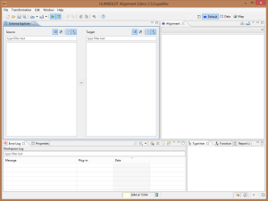
Le parti più importanti sono indubbiamente le viste dello Schema explorer e dell’Alignment.
Hale è stato concepito per mappatura di strutture di dati molto complesse, fra schemi di dati xml come lo possono essere ad esempio gli schemi CityGML. Il nostro esempio non renderà onore a questo potenziale, in questa sede si vuole piuttosto introdurre lo strumento in generale.
Definire lo schema di arrivo
La prima cosa da definire, è lo schema verso il quale si desidera mappare lo schema dei dati originali. Nel nostro caso si parla di dati del TransportNetwork, quindi è necessario caricare lo schema xml del RoadTransportNetwork di INSPIRE. Tale schema è scaricabile qui.
Una volta scaricato sul proprio disco rigido, è possibile importarne la definizione dal menu di import attraverso l’operazione target schema:
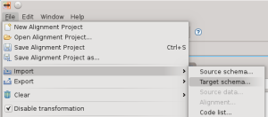
definendo poi nella procedura guidata il file da importare:
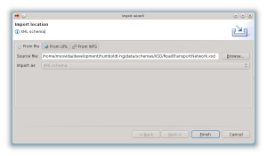
per poi trovarsi lo schema visualizzato nella sua struttura ad albero in Hale:

Da poco sono stati aggiunti alcuni schemi preconfigurati legati a INSPIRE, che si possono trovare nella tab denominata presets. Nel nostro caso lo schema di interesse è presente:
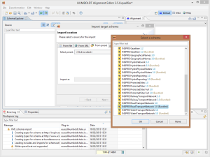
Definire lo schema di partenza
La definizione dello schema di partenza può essere una procedura semplice o molto complessa, dipendentemente dal formato in cui si sono mantenuti i propri dati (e questa è indubbiamente una scienza a parte). Hale permette l’import dello schema da file, ma anche da servizi WFS. Per set di dati molto semplici è possibile generare uno schema estraendolo da shapefile.
Come per il target schema, partendo nuovamente dal menu di import, procediamo ad importare il source schema:
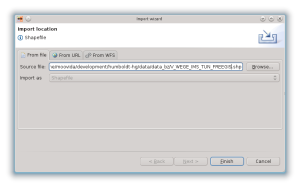
per trovarci con la seguente situazione:
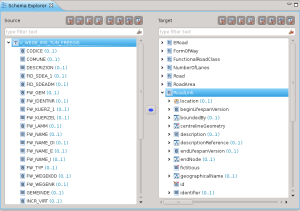
Nell’immagine la selezione è stata poi posizionata sui due tipi da mappare.
Come mappare gli schemi
Mappatura del tipo
La prima operazione da fare, è quella della mappatura dei tipi principali, in questo caso V_WEGE_IMS_TUN_FREEGIS verso il RoadLink INSPIRE.
Il dato di partenza pero’ contiene tutto il transport network (strade, ferrovie, etc), quindi bisogna procedere a creare una regola per estrarre solo le strade.
Con un GIS questa operazione è abbastanza triviale. In uDig l’operazione può essere fatta con il linguaggio CQL (Constraint Query Language).
Ad esempio ponendo delle condizioni sul campo giusto possiamo isolare le ferrovie:
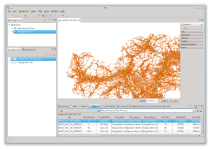
oppure, cosa necessaria al nostro esempio, le strade:
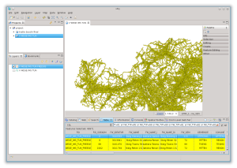
Il motivo per il quale vi cito uDig è duplice. Perché è il GIS con il quale lavoro e che supporto in modo attivo, ma anche perché Hale supporta lo stesso identico linguaggio CQL.
E’ quindi possibile creare un condition context:
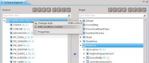
usando come condizione esattamente la stringa testata in uDig:
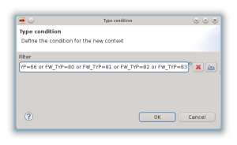
A questo punto Hale crea un nuovo tipo in base alla condizione imposta e sarà quello che verrà mappato attraverso un’operazione di Retype:
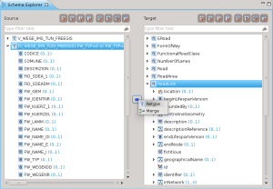
Una volta conclusa la procedura guidata, la mappatura sarà visualizzata nello schema explorer e nella vista dell’Alignment:
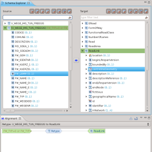
Mappatura degli attributi
Non voglio tediarvi con la descrizione dei vari attributi, quindi riassumerò solo alcune operazioni che si possono applicare per la mappatura degli attributi
Formattazione di stringhe
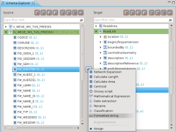
Permette di concatenare le stringhe dei diversi campi dello schema di partenza e delle costanti aggiunte manualmente per creare una stringa nello schema di arrivo:
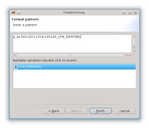
Appena applicata la mappatura, viene visualizzata nella Alignment View e la vista delle proprietà ci fornisce una descrizione dell’operazione applicata:
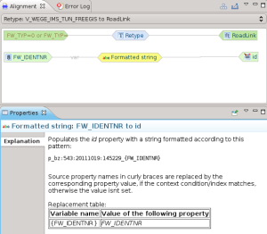
Classificazione
La classificazione è forse una delle operazioni più importanti, permette di mappare classi di valori.
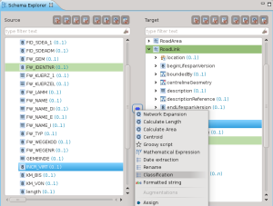
Un esempio molto semplice è la mappature fra dei valori interi 0/1 al loro booleano nello schema di arrivo:
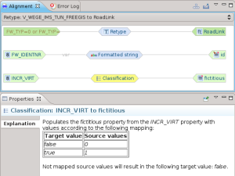
Mappatura della geometria
E’ possibile eseguire la mappatura di geometrie:
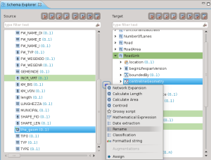
Il tipo nel nostro caso è lo stesso, quindi una operazione di rename è sufficiente:
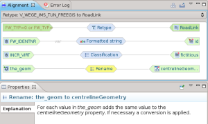
Non mi spingo oltre con la descrizione del processo di mappatura. Accenno solo al fatto che è possibile utilizzare anche degli script, cioè dei frammenti semplificati di programmi, che rendono possibili trasformazioni personalizzate molto complesse.
Controllo mappatura e trasformazione dati
Una volta conclusa la mappatura, la vista delle trasformazioni è quello che fa per noi. Ci permette di dare una controllata finale al grafico della trasformazione
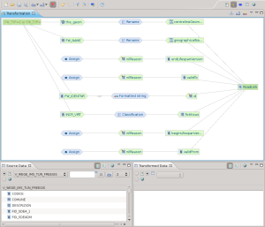
e la possibilità di caricare un set di dati per eseguire una trasformazione secondo la mappatura precedentemente prodotta.
La procedura di import dei dati è simile a quella degli schemi, selezionando source data come tipo di import:
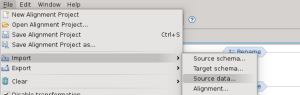
Il file da importare nel caso di questo esempio è lo stesso usato per definire lo schema:
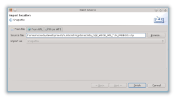
Una volta importato il dato, viene visualizzato nella parte bassa dell’applicativo un set di esempio di dati originali e trasformati. Questo è molto utile per avere un idea dell’effettiva bontà della mappatura:
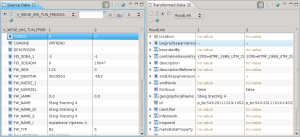
E’ infine possibile esportare il dato trasformato in formato GML, come richiesto da INSPIRE. Dal menu di export
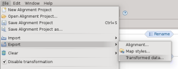
è possibile accedere alla procedura guidata che definisce il formato di output e poi esegue l’operazione di export:
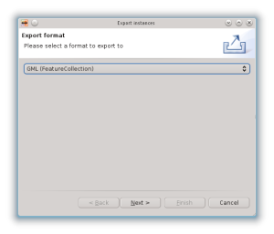
Conclusioni
Non è facile scrivere un breve articolo riguardante strumenti così complessi. Me ne sono reso conto in modo sempre più decisivo durante la stesura di questo articolo.
Spero comunque di essere riuscito a suscitare interesse per Hale.
Spero che sia evidente l’importanza di avere uno strumento aperto e trasparente in processi di questo tipo. Personalmente starei attento a generare dipendenze da software chiusi e proprietari in processi complessi quali la migrazione dei dati. Queste procedure infatti si protraggono anche per parecchio tempo; non di rado passano per sperimentazioni, tentativi e possibili cambi di attori. Un software aperto a tutti – invece – permette maggiore autonomia e dà la possibilità, volendo, di seguire i processi a tutti i livelli desiderati. Non va dimenticato che in questi contesti è spesso necessario adattare lo strumento a casi specifici, quindi avere la possibilità di estenderlo e modificarlo può essere una carta vincente.
Spero infine che sia chiaro che la trasformazione di dati fra schemi non è una cosa impossibile (in caso la fatica sta nell’apprendere gli schemi INSPIRE). Ci sono strumenti validi a supporto e Hale - a mio avviso - è uno fra questi. Esorto le amministrazioni a cercare gli esperti dei dati sul proprio territorio e non affidarsi a softwarehouse che promettono il fatidico pulsante magico… non è realistico. I professionisti locali del settore conoscono bene lo stato dei dati e le reali problematiche ad essi legati e nessuno più di loro desidera che i dati migrati siano della giusta qualità.
Infine, ai temerari e amanti del genere lascio il link al video informativo reso disponibile dal DHP, nel quale vengono introdotti i tutorial inseriti dentro a Hale sotto forma di procedure guidate, che ne facilitano l’apprendimento.
Posted in osgeo, Strumenti | 5 Comments »
24 dicembre, 2012 | di Pietro Blu Giandonato
Come molti ormai sanno già dalla scorsa estate, la prossima Conferenza INSPIRE si terrà a Firenze dal 23 al 27 giugno 2013, e da un paio di giorni sta circolando la call for contributions con alcuni dettagli sull’evento. Con questo breve articolo vogliamo dare semplicemente eco alla cosa, riprendendo in buona parte proprio il testo della call.
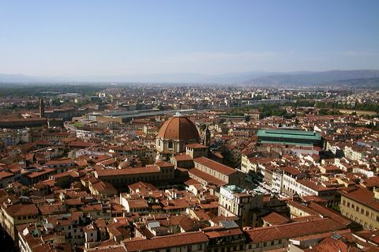
Il tema della Conferenza è “The Green Renaissance”, che tradotto in “Il Rinascimento Verde” francamente lascia un po’ perplessi. Il comitato organizzatore si è comunque ispirato proprio al movimento rinascimentale, che ha profondamente influenzato la vita intellettuale europea, facendo sentire la sua influenza nell’arte, nella letteratura, nella politica, la scienza, la religione. Analogamente la Direttiva INSPIRE vuole influenzare il modo in cui le informazioni per la gestione del nostro pianeta possono essere condivise e fruite.
L’obiettivo della Conferenza INSPIRE del 2013 è quello di fare un bilancio di questo progresso, scambiando opinioni ed esperienze e su come INSPIRE sta affrontando le sfide passate e le esigenze emergenti, per individuare nuove opportunità e riflettere collettivamente su come potrà evolvere ulteriormente per massimizzare i benefici per la società.
Call per poster e contributi
La call invita a proporre poster e contributi nell’ambito dei tre “pilastri” che il comitato ha individuato, ovvero “Showcase on Environment”, “Capacities” e “Networking”, ciascuno dei quali a sua volta comprende ulteriori topic:
- Showcase on Environment
- Transport
- Natural disasters
- Environmental Protection and Historical Landscape
- Forestry
- Environmental impact assessment
- Integrated spatial assessments
- Population and eco-systems
- Land Monitoring
- Capacities
- Earth Observation (Copenicus [GMES], “GEOSS”..)
- Lessons learnt and best practice
- Costs and Benefits of implementing INSPIRE
- Green economy
- Public and Private Sector partnerships
- Technologies required to deliver INSPIRE
- Multi-disciplinary e-infrastructures
- Cloud computing
- Sensors and Sensor web
- Citizen science/crowd sourcing
- Linked data and semantic web
- Capacity Building
- Networking
- EU Enlargement and Integration
- EU Location Framework
- EU Committee of the Regions
- UN GGIM
- National and regional initiatives
- Cross thematic networking
- eGovernment
- Open data
- Greening the information society
E’ inoltre possibile presentare contributi per l’edizione speciale del Internationa Journal of Spatial Data Infrastructure Research (IJSDIR), il termine ultimo per la presentazione del paper completo è il 31 maggio 2013.
Call per workshop
I workshop pre-conferenza si svolgeranno il 23 e 24 giugno, ogni laboratorio o tutorial può essere proposto per una singola sessione di 90 minuti. Il tipico partecipante alla conferenza si registra a massimo quattro workshop e tutorial da 90 minuti durante una singola giornata di seminario. Per tutti i partecipanti alla conferenza, workshop e i tutorial saranno aperti senza alcun costo aggiuntivo, mentre è prevista una tariffa giornaliera per coloro che vorranno frequentare solo i workshop. Chi è interessato a presentare una proposta di workshop o tutorial trova indicazioni specifiche sul sito web della Conferenza.
La deadline per presentare sia paper che workshop è il 1 marzo 2013, mentre per i poster il 29 marzo 2013.
Ultime novità riguardo le specifiche tecniche
Il comitato ci ricorda inoltre che il team del JRC sulle specifiche tecniche e i Thematic Working Group (TWG) stanno lavorando duro per finalizzare la versione 3.0rc3 (release candidate 3) delle specifiche dati dei temi compresi negli Allegati II e III della direttiva INSPIRE.
Questa versione sarà consistente con le bozze di emendamenti alle Implementing Rules per l’interoperabilità dei dataset spaziali e dei servizi attualmente in via di traduzione. I modelli dati corrispondenti e gli schemi xml sono stati già pubblicati (link) mentre le linee guida verranno rilasciate l’anno prossimo, man mano che saranno disponibili. Sarà utile tenere sotto controllo il sito web dedicato agli ultimi documenti (link).
La comunicazione
Noi di TANTO siamo particolarmente attenti agli aspetti della comunicazione che riguardano gli eventi della geomatica, e teniamo a sottolineare che l’hashtag lanciato da @INSPIRE_EU (l’account Twitter ufficiale di INSPIRE) è #inspireeu2013. Esiste anche un account INSPIRE su Storify, che ha raccolto un po’ di tweet e altro materiale riguardante la Conferenza 2012 tenutasi a Istanbul, date un’occhiata qui. Speriamo di poter contribuire attivamente anche noi il prossimo giugno a Firenze.
Posted in Eventi | 2 Comments »


{kind=link}
{kind=link}
{kind=link}
{kind=link}
{kind=link}
{kind=link}
{kind=link}
{kind=link}
{kind=link}
{kind=link}
{kind=link}
{kind=link}
{kind=link}
{kind=link}
{kind=link}
{kind=link}
{kind=link}
{kind=link}
{kind=link}
{kind=link}
{kind=link}
{kind=link}
{kind=link}
{kind=link}
{kind=link}
{kind=link}